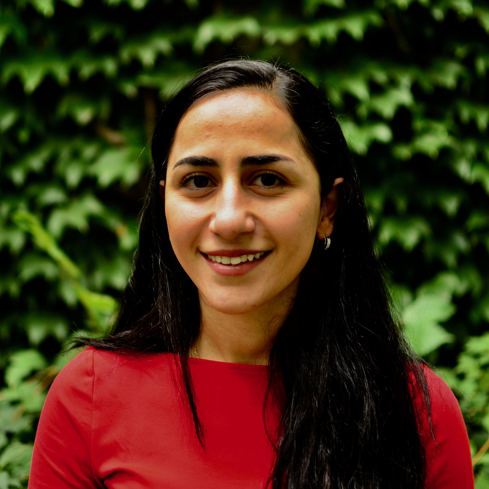
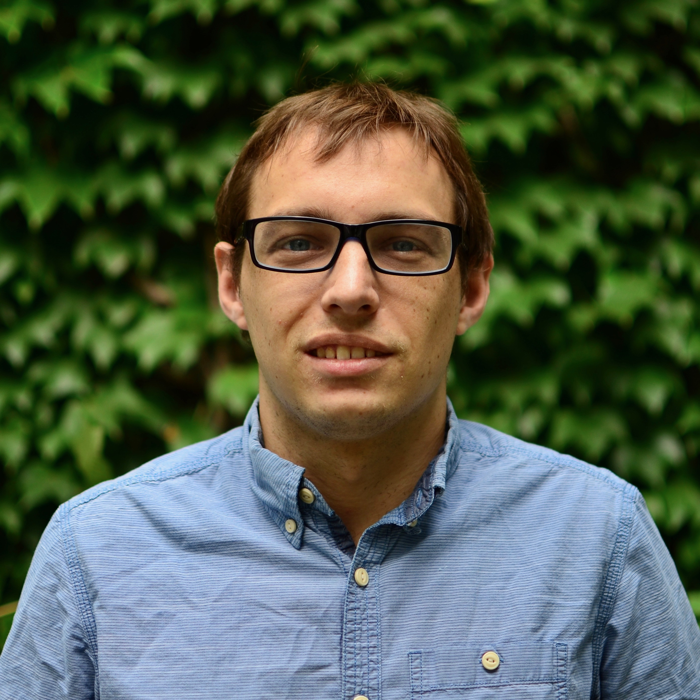
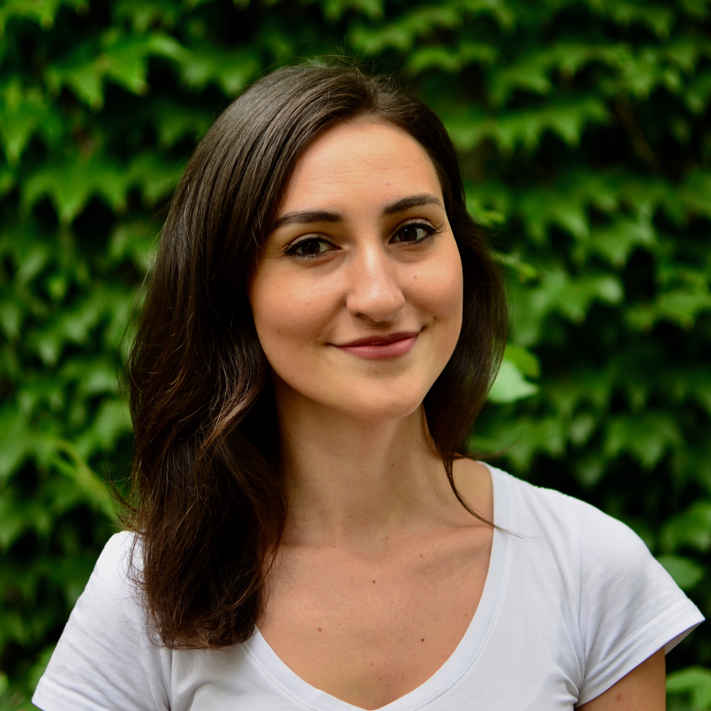

Hala Abou-Assi
Synthesis of modified nucleoside analogs; Structural studies of DNA secondary structures
Hometown: Aley, Lebanon
BSc: American University of Beirut
email
linkedin

Daniel O'Reilly
Modified nucleic acids; Photolabile linkers for RNA synthesis
Hometown: Portsmouth, U.K.
MChem: University of Southampton
email
linkedin

Leonora Abdullahu
Synthesis of branched RNAs for inhibition of Dbr1
Hometown: Pristina, Kosovo
HBSc: McMaster University
email
linkedin